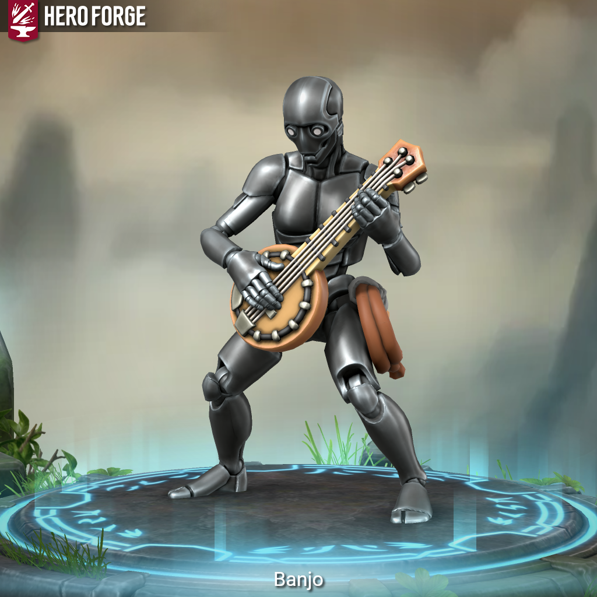

Banjoblade - Is This Anything?

Meet Banjoblade.
He was built for one job. One target. One mission. One ending. And then he was supposed to be taken apart. That was the deal. That was always the deal.
His target was powerful. Wealthy. The kind of politician whose hands are clean because he pays other people to do the dirty work. Banjo got closer than anyone had before. He came in as an entertainer, which, if you know him, is either a brilliant cover or a bad joke. He nearly had him.
Nearly.
He was made. His cover burned, his mission blown, he went face-to-face with the man he was created to end, and came up short. With the mission failed and his creator waiting at the other end of a very short leash, Banjo made his choice. He didn’t go back. He ran.
That was nearly a century ago.
He found out quickly that the only thing he was built for – getting close to people who don’t want to be found and ending them quietly – had a market. He’s been selling that skill to the highest bidder ever since. No loyalties, causes, or crusades. Just the work and the coin.
The banjo is not a bit. Well – it’s a little bit of a bit. But the two daggers inside it are not a bit. Neither are the throwing knives. Neither is the poison kit. It functions as a blunt instrument in a pinch, which Banjo will tell you with a completely straight face is called “going acoustic.” The whip on his hip handles the distance work – tripping, disarming, intercepting a blade already in the air, reminding someone that their throwing arm was a bad idea.
He has been doing this for almost a hundred years, and he is very good at it.
Banjoblade is a Warforged Envoy built for infiltration. He is an assassin-for-hire with no allegiance to anyone with less coin than the next bidder. His toolkit lives inside his namesake: two hidden daggers, a set of throwing knives that double as melee blades, and a poison kit. His whip covers offense, control, and reaction – disarming, tripping, and intercepting on the fly. Up close, the banjo itself closes the argument. He plays every role except the one he was made for, and he has made peace with that. Mostly.